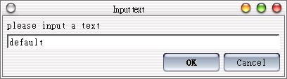
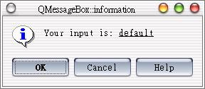
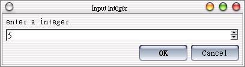
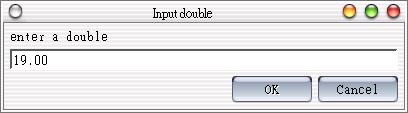
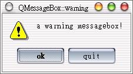
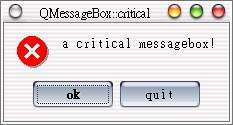
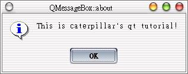
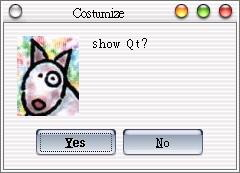
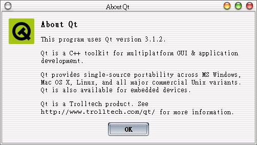

在程式中常出現一些簡單的對話或訊息方塊，我們在這邊介紹的QInputDialog與QMessageBox算是最常見的類型，它們的使用非常簡單，以下先看個簡單的程式，請編輯main.cpp。
#include <qapplication.h> 在這個程式中，QInputDialog使用getText方法來取得使用者輸入字串，然後使用QMessageBox來顯示輸入的字串； QInputDialog若取得輸入，則會在ok中填入true，由此可判斷使用者是否有輸入，QMessageBox比較特殊的功能在於，它可以使用一 些基本的html語法來設定文字的顯示，其中第一個0表示這個QMessageBox不屬於任一個類別，第二個0表示這個QMessageBox的名稱， 再來的1表示設定為獨佔模式（model），使用者必須回應這個訊息方塊才能繼續操作程式；至於每個字串的設定各是何作用，直接看執行結果比較清楚：   以下再介紹一些對話與訊息方塊的樣式。 設定預設值為0，下界為0，上界為100，step為1的整數輸入對話方塊 ： QInputDialog::getInteger("Input integer",
"enter a integer", 0, 0, 100, 1, &ok);  設定預設值為0，下界為0，上界為10.0，小數位數為2位的浮點數輸入對話方塊： QInputDialog::getDouble("Input double",
"enter a double", 0.0, 0.0, 10.0, 2, &ok);  一個警示訊息方塊： QMessageBox::warning(0, "QMessageBox::warning",
"a warning messagebox!", "ok", "quit", 0, 0, 1);  一個禁止訊息方塊： QMessageBox::critical(0, "QMessageBox::critical",
"a critical messagebox!", "ok", "quit", 0, 0, 1);  一個「關於..」訊息方塊，常用於程式簡介 QMessageBox::about(0, "QMessageBox::about",
"This is caterpillar's qt tutorial!");  訊息方塊的傳回值是根據您按下的按鈕，由左而右依序傳回1、2、3，我們可以使用switch比對傳回值以進行對應的處理，一個範例片段如下所示： switch( QMessageBox::warning( this, "Application name",
您也可以自訂訊息方塊的圖示、按鈕等選項，以下是一個簡單的示範： "Could not connect to the <mumble> server.\n" "This program can't function correctly " "without the server.\n\n", "Retry", "Quit", 0, 0, 1 ) ) case 0: // The user clicked the Retry again button or pressed Enter // try again break; case 1: // The user clicked the Quit or pressed Escape // exit break; } #include <qapplication.h> QMessageBox主要有三個按鈕，這個程式設定前兩個按鈕分別為Yes與No顯示與功能，第三個按鈕不使用，而預設選項為Yes鈕，按下Esc鍵會自動按No鈕；我們先不設定ICON，而使用setIconPixmap()設定自製的圖檔為圖示。 如果按下的是Yes鈕，則顯示Qt版權等相關訊息，這是aboutQt所作的事，以下為執行的畫面：   |
|